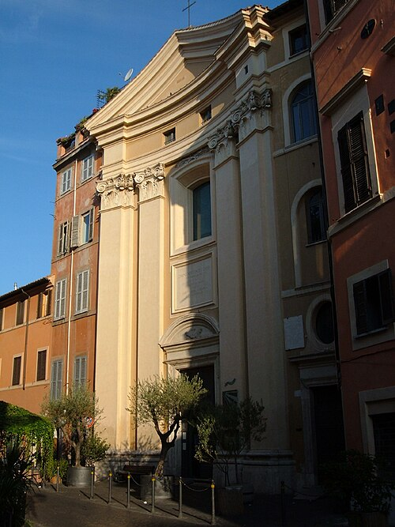

José de Calasanz y Gastón nació en 1557 en Peralta de la Sal, una localidad de
Aragón, España. Creció en una familia cristiana y recibió una amplia formación
cultural y religiosa. Desde joven sintió la vocación sacerdotal y, después de
completar sus estudios, fue ordenado sacerdote.
Sus primeros años como sacerdote
Durante sus primeros años de ministerio desempeñó diferentes funciones pastorales
y administrativas en varias diócesis españolas. En 1592 viajó a Roma pensando que
su permanencia allí sería temporal. Sin embargo, el contacto con la realidad de la
ciudad produjo un cambio decisivo en su vida.
El encuentro con una realidad diferente
Mientras recorría los barrios más pobres de Roma, especialmente el Trastevere,
observó que muchos niños vivían en las calles y no tenían acceso a la educación.
En aquella época, estudiar era una posibilidad reservada principalmente para las
familias que podían pagar maestros o instituciones educativas.
Calasanz comprendió que esos niños necesitaban, además de ayuda material,
conocimientos, valores y herramientas para construir un futuro diferente.
La escuela de Santa Dorotea
En 1597 comenzó a colaborar con una pequeña escuela ubicada en la parroquia de
Santa Dorotea, en el Trastevere. A partir de esa experiencia desarrolló la que la
Orden de las Escuelas Pías considera la primera escuela popular y gratuita de
Europa.
Calasanz abandonó sus aspiraciones personales y dedicó definitivamente su vida a
la educación de los niños pobres.

En Santa Dorotea comenzó la obra educativa que dio origen a las Escuelas Pías.
Educación para todos
Su obra educativa
La obra más importante de San José de Calasanz fue la creación de las Escuelas Pías.
Su objetivo era ofrecer una educación gratuita, integral y cristiana, dando prioridad
a los niños y jóvenes que no tenían posibilidades de estudiar.
Su propuesta otorgaba especial importancia a la educación desde los primeros años de
vida, porque consideraba que una buena formación durante la infancia podía orientar
positivamente el futuro de una persona. También defendió el respeto por la personalidad
y la dignidad de cada niño.
En sus escuelas se enseñaban conocimientos religiosos, lectura, escritura, matemáticas,
ciencias y humanidades. Calasanz mantuvo contacto con Galileo Galilei y valoró
especialmente el estudio de las matemáticas y de las ciencias. Esto muestra que su
modelo buscaba integrar la fe con el conocimiento y la cultura.
Piedad y Letras
Calasanz resumió su propuesta educativa mediante el lema
“Piedad y Letras”. Su intención no era enseñar únicamente contenidos
escolares, sino formar integralmente a cada estudiante.
Piedad
Representa la fe, los valores, la espiritualidad y la formación de la
persona.
Letras
Representa los conocimientos, la cultura, las ciencias y la preparación
intelectual.
Fundación de las Escuelas Pías
Para garantizar la continuidad de su obra, Calasanz reunió una comunidad estable
de religiosos y educadores. En 1617, la Iglesia reconoció al grupo como congregación.
En 1622, las Escuelas Pías quedaron constituidas como orden religiosa dedicada
especialmente a la educación de la infancia y la juventud.
Sus integrantes, conocidos como escolapios, asumieron los votos de pobreza, castidad
y obediencia, junto con un cuarto voto de dedicación a la educación.
Momentos fundamentales
Cronología principal
Nace en Peralta de la Sal, Aragón.
Viaja a Roma, donde conoce la realidad de los niños pobres.
Inicia la escuela popular y gratuita en Santa Dorotea, Trastevere.
La Iglesia aprueba la comunidad como congregación.
Se redactan y aprueban las Constituciones de Calasanz.
Las Escuelas Pías quedan constituidas como orden religiosa.
La Orden es reducida jurídicamente debido a conflictos internos y externos.
Calasanz muere en Roma manteniendo su confianza en la continuidad de la obra.
Es canonizado por el papa Clemente XIII.
El papa Pío XII lo proclama patrono de las escuelas populares cristianas.
Perseverancia
Dificultades atravesadas
El proyecto de Calasanz debió superar numerosos problemas. Las escuelas crecían
rápidamente, pero sus recursos económicos eran limitados. También existían dificultades
para conseguir docentes preparados y comprometidos de manera permanente.
Además, la educación de los pobres generaba oposición en algunos sectores de la
sociedad. La obra atravesó conflictos internos y cuestionamientos de autoridades
eclesiásticas. Finalmente, en 1646, la Orden de las Escuelas Pías fue reducida
jurídicamente a una congregación sin votos.
Calasanz recibió esta decisión durante los últimos años de su vida. Aunque parecía que
su obra podía desaparecer, mantuvo la confianza en que las Escuelas Pías continuarían.
Murió en Roma el 25 de agosto de 1648. Con el tiempo, la comunidad recuperó su
reconocimiento y la misión escolapia continuó extendiéndose.
Continuar el recorrido
Testimonio y legado
La historia continúa con los valores que guiaron sus decisiones y con la presencia
actual de su obra en las comunidades educativas escolapias.